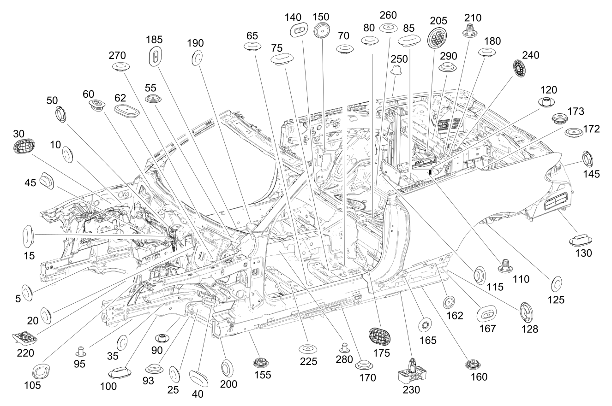

| № | Артикул | Название | Кол. | Примечание | Ограничение |
|---|---|---|---|---|---|
| 5 | A 003 998 14 50 | Пробка (STOP PLUG) | 1 | Продольный несущий элемент слева; 20 MM | |
| 5 | A 003 998 14 50 | Пробка (STOP PLUG) | 1 | Лонжерон спереди слева; 20 MM | |
| 5 | A 003 998 14 50 | Пробка (STOP PLUG) | 1 | Слева изнутри; 20 MM | |
| 5 | A 003 998 14 50 | Пробка (STOP PLUG) | 1 | Продольный несущий элемент изнутри слева; 20 MM | |
| 5 | A 003 998 14 50 | Пробка (STOP PLUG) | 1 | Продольный несущий элемент изнутри справа; 20 MM | |
| 5 | A 003 998 14 50 | Пробка (STOP PLUG) | 1 | Лонжерон спереди справа; 20 MM | |
| 5 | A 003 998 14 50 | Пробка (STOP PLUG) | 1 | Справа изнутри; 20 MM | |
| 5 | A 003 998 14 50 | Пробка (STOP PLUG) | 1 | Продольный несущий элемент справа; 20 MM | |
| 10 | A 003 998 14 50 | Пробка (STOP PLUG) | 1 | Продольный несущий элемент спереди изнутри слева; 20 MM | |
| 10 | A 003 998 14 50 | Пробка (STOP PLUG) | 1 | Продольный несущий элемент спереди изнутри справа; 20 MM | |
| 15 | A 002 998 56 50 | Пробка (STOP PLUG) | 1 | К перегородке снаружи посередине; 10 X 20MM | |
| 20 | A 003 997 67 86 | Пробка (STOP PLUG) | 1 | К перегородке снаружи слева; 30 MM | |
| 20 | A 003 997 67 86 | Пробка (STOP PLUG) | 1 | Перегородка слева; 30 MM | |
| 20 | A 001 998 81 50 | Пробка (STOP PLUG) | 1 | К перегородке снаружи справа; 40 MM | -(ME05/2U8+(M264/M274/M276/M177)/228/466/882) |
| 25 | A 002 998 49 50 | Пробка (STOP PLUG) | 1 | К поперечине, слева; 27MM | |
| 25 | A 002 998 49 50 | Пробка (STOP PLUG) | 1 | К поперечине, справа; 27MM | |
| 25 | A 003 998 14 50 | Пробка (STOP PLUG) | 1 | К поперечине сверху; 20 MM | |
| 30 | A 003 998 24 50 | Пробка (STOP PLUG) | 1 | К кронштейну АКБ и оборудования | -ME06 |
| 35 | A 003 998 14 50 | Пробка (STOP PLUG) | 1 | Поперечина спереди слева; 20 MM | |
| 35 | A 003 998 14 50 | Пробка (STOP PLUG) | 1 | К поперечине снаружи слева; 20 MM | |
| 35 | A 003 998 14 50 | Пробка (STOP PLUG) | 1 | Поперечина (левая); 20 MM | |
| 35 | A 003 998 14 50 | Пробка (STOP PLUG) | 1 | Поперечина спереди справа; 20 MM | |
| 35 | A 003 998 14 50 | Пробка (STOP PLUG) | 1 | К поперечине снаружи справа; 20 MM | |
| 35 | A 003 998 14 50 | Пробка (STOP PLUG) | 1 | Поперечина (правая); 20 MM | |
| 40 | A 000 998 06 90 | Запорная шайба (STOPPER WASHER) | 1 | К поперечине сверху; 20X30 MM | |
| 45 | A 002 998 56 50 | Пробка (STOP PLUG) | 1 | Моторный щит, изнутри слева; 10 X 20MM | |
| 45 | A 002 998 56 50 | Пробка (STOP PLUG) | 1 | Моторный щит, изнутри справа; 10 X 20MM | |
| 50 | A 003 998 14 50 | Пробка (STOP PLUG) | 1 | Моторный щит, слева; 20 MM | |
| 50 | A 003 998 13 50 | Пробка (STOP PLUG) | 1 | Моторный щит, изнутри посередине; 15 MM Рулевое управление: Влево | |
| 50 | A 003 998 14 50 | Пробка (STOP PLUG) | 1 | Моторный щит, справа; 20 MM | |
| 50 | A 003 998 13 50 | Пробка (STOP PLUG) | 1 | Моторный щит, изнутри слева; 15 MM | |
| 50 | A 003 998 13 50 | Пробка (STOP PLUG) | 1 | Моторный щит, изнутри справа; 15 MM | |
| 55 | A 003 997 67 86 | Пробка (STOP PLUG) | 1 | Поперечина под ветровым стеклом, слева; 30 MM | |
| 55 | A 003 997 67 86 | Пробка (STOP PLUG) | 1 | Поперечина под ветровым стеклом, справа; 30 MM | |
| 55 | A 003 998 13 50 | Пробка (STOP PLUG) | 1 | Поперечина под ветровым стеклом, слева; 15 MM | |
| 60 | A 003 998 46 50 | Пробка (STOP PLUG) | 1 | Поперечина под ветровым стеклом, справа; 15X25MM | |
| 62 | A 003 998 49 50 | Пробка (STOP PLUG) | 1 | Лонжерон спереди слева 63X38 | -(ME04/ME05/ME06/B01) |
| 65 | A 003 998 14 50 | Пробка (STOP PLUG) | 1 | Пол под водителем слева; 20 MM | |
| 65 | A 003 998 14 50 | Пробка (STOP PLUG) | 1 | Пол сзади слева; 20 MM | |
| 65 | A 003 998 14 50 | Пробка (STOP PLUG) | 1 | Пол пассажирского салона посередине слева снаружи; 20 MM | |
| 65 | A 003 998 14 50 | Пробка (STOP PLUG) | 1 | Пол в задней части салона слева; 20 MM | |
| 65 | A 003 998 14 50 | Пробка (STOP PLUG) | 1 | Пол пассажирского салона посередине справа снаружи; 20 MM | |
| 70 | A 002 998 49 50 | Пробка (STOP PLUG) | 1 | Пол пассажирского салона сзади слева снаружи; 27MM | |
| 70 | A 003 998 14 50 | Пробка (STOP PLUG) | 1 | Пол пассажирского салона сзади слева снаружи; 20 MM | |
| 70 | A 003 998 14 50 | Пробка (STOP PLUG) | 1 | Пол пассажирского салона сзади слева изнутри; 20 MM | |
| 70 | A 002 998 49 50 | Пробка (STOP PLUG) | 1 | Пол пассажирского салона сзади справа снаружи; 27MM | |
| 70 | A 003 998 14 50 | Пробка (STOP PLUG) | 1 | Пол пассажирского салона сзади справа снаружи; 20 MM | |
| 70 | A 001 998 51 50 | Пробка (STOP PLUG) | 1 | Пол пассажирского салона сзади справа изнутри; 10 MM | |
| 70 | A 003 998 14 50 | Пробка (STOP PLUG) | 1 | Пол пассажирского салона сзади справа изнутри; 20 MM | |
| 70 | A 001 998 51 50 | Пробка (STOP PLUG) | 1 | Пол пассажирского салона сзади слева снаружи; 10 MM | |
| 75 | A 001 998 58 50 | Пробка (STOP PLUG) | 1 | Пол пассажирского салона сзади слева изнутри 20X25mm | |
| 75 | A 001 998 58 50 | Пробка (STOP PLUG) | 1 | Пол пассажирского салона сзади справа изнутри 20X25mm | |
| 80 | A 003 998 14 50 | Пробка (STOP PLUG) | 1 | Пол в задней части салона, слева; 20 MM | |
| 80 | A 003 998 14 50 | Пробка (STOP PLUG) | 1 | Пол в задней части салона посередине; 20 MM | |
| 85 | A 003 998 46 50 | Пробка (STOP PLUG) | 1 | Поперечина посередине; 15X25MM | |
| 85 | A 002 998 56 50 | Пробка (STOP PLUG) | 1 | Пол в задней части салона, снаружи слева; 10 X 20MM | |
| 85 | A 001 998 51 50 | Пробка (STOP PLUG) | 1 | Пол в задней части салона, снаружи справа; 10 MM | |
| 90 | A 000 998 09 90 | Пробка (GROMMET) | 1 | Лонжерон спереди слева; 20 MM | |
| 90 | A 000 998 09 90 | Пробка (GROMMET) | 1 | Лонжерон спереди справа; 20 MM | |
| 90 | A 003 998 14 50 | Пробка (STOP PLUG) | 1 | Продольный несущий элемент посередине слева; 20 MM | -ME05 |
| 90 | A 003 998 14 50 | Пробка (STOP PLUG) | 1 | Продольный несущий элемент посередине справа; 20 MM | |
| 90 | A 001 998 51 50 | Пробка (STOP PLUG) | 1 | Основное днище посередине слева; 10 MM | |
| 90 | A 001 998 51 50 | Пробка (STOP PLUG) | 1 | Основное днище посередине справа; 10 MM | |
| 93 | A 003 998 13 50 | Пробка (STOP PLUG) | 1 | Пол под педалями слева; 15 MM | |
| 95 | A 000 998 18 55 | Уплотнительная пробка (SEALING PLUG) | 1 | Лонжерон спереди слева; 8.6 MM | M005 |
| 95 | A 000 998 18 55 | Уплотнительная пробка (SEALING PLUG) | 1 | Продольный несущий элемент слева; 8.6 MM | M005 |
| 95 | A 000 998 18 55 | Уплотнительная пробка (SEALING PLUG) | 1 | Лонжерон спереди справа; 8.6 MM | M005 |
| 95 | A 000 998 18 55 | Уплотнительная пробка (SEALING PLUG) | 1 | Продольный несущий элемент справа; 8.6 MM | M005 |
| 100 | A 000 998 06 90 | Запорная шайба (STOPPER WASHER) | 1 | Лонжерон спереди слева; 20X30 MM | |
| 100 | A 000 998 06 90 | Запорная шайба (STOPPER WASHER) | 1 | Лонжерон спереди справа; 20X30 MM | |
| 105 | A 000 998 34 90 | Пробка (STOP PLUG) | 1 | Туннель коробки передач спереди слева; 42.2X26.2MM | |
| 105 | A 000 998 34 90 | Пробка (STOP PLUG) | 1 | Туннель трансмиссии спереди справа; 42.2X26.2MM | |
| 105 | A 000 998 06 90 | Запорная шайба (STOPPER WASHER) | 1 | Поперечина спереди слева; 20X30 MM | |
| 105 | A 000 998 06 90 | Запорная шайба (STOPPER WASHER) | 1 | Поперечина спереди справа; 20X30 MM | |
| 110 | A 000 998 60 50 | Пробка (STOP PLUG) | 1 | Масса поперечины в задней части салона, слева; M8 [414] СТАРУЮ ДЕТАЛЬ УСТАНАВЛИВАТЬ БОЛЬШЕ НЕ РАЗРЕШАЕТСЯ | -ME04 |
| 110 | A 003 998 63 50 | Пробка (STOP PLUG) | 1 | Поперечина сзади, слева | -ME04 |
| 110 | A 000 998 60 50 | Пробка (STOP PLUG) | 1 | Поперечина сзади, слева снаружи; M8 [414] СТАРУЮ ДЕТАЛЬ УСТАНАВЛИВАТЬ БОЛЬШЕ НЕ РАЗРЕШАЕТСЯ | -(ME04/ME05) |
| 110 | A 003 998 63 50 | Пробка (STOP PLUG) | 1 | Поперечина сзади, слева снаружи | -(ME04/ME05) |
| 115 | A 003 998 14 50 | Пробка (STOP PLUG) | 1 | Поперечина под задним сиденьем, слева; 20 MM | |
| 115 | A 003 998 14 50 | Пробка (STOP PLUG) | 1 | Масса поперечины в задней части салона, слева; 20 MM | |
| 115 | A 003 998 14 50 | Пробка (STOP PLUG) | 1 | Масса поперечины в задней части салона, справа; 20 MM | |
| 115 | A 003 998 14 50 | Пробка (STOP PLUG) | 1 | Поперечина под задним сиденьем, справа; 20 MM | |
| 115 | A 003 998 14 50 | Пробка (STOP PLUG) | 1 | Под задним сиденьем слева; 20 MM | |
| 115 | A 003 998 14 50 | Пробка (STOP PLUG) | 1 | Под задним сиденьем справа; 20 MM | |
| 120 | A 000 998 09 90 | Пробка (GROMMET) | 1 | Поперечина заднего моста слева; 20 MM | |
| 120 | A 000 998 10 90 | Пробка (GROMMET) | 1 | Поперечина заднего моста слева; 25 MM | |
| 120 | A 001 998 51 50 | Пробка (STOP PLUG) | 1 | Поперечная балка заднего моста (левая сторона); 10 MM | |
| 120 | A 001 998 51 50 | Пробка (STOP PLUG) | 1 | Поперечина заднего моста слева; 10 MM | |
| 120 | A 000 998 09 90 | Пробка (GROMMET) | 1 | Поперечина заднего моста справа; 20 MM | |
| 120 | A 000 998 10 90 | Пробка (GROMMET) | 1 | Поперечина заднего моста справа; 25 MM | |
| 120 | A 001 998 51 50 | Пробка (STOP PLUG) | 1 | Поперечная балка заднего моста (правая сторона); 10 MM | |
| 120 | A 001 998 51 50 | Пробка (STOP PLUG) | 1 | Поперечина заднего моста справа; 10 MM | |
| 125 | A 003 998 14 50 | Пробка (STOP PLUG) | 1 | Продольный несущий элемент сзади слева; 20 MM | |
| 125 | A 003 998 14 50 | Пробка (STOP PLUG) | 1 | Продольный несущий элемент сзади справа; 20 MM | |
| 125 | A 003 998 14 50 | Пробка (STOP PLUG) | 1 | Лонжерон сзади посередине слева; 20 MM | |
| 125 | A 003 998 14 50 | Пробка (STOP PLUG) | 1 | Колесная арка сзади слева; 20 MM | |
| 125 | A 003 998 14 50 | Пробка (STOP PLUG) | 1 | Вибро\- и шумоизоляция вверху Колесная арка сзади слева; 20 MM | |
| 125 | A 003 998 14 50 | Пробка (STOP PLUG) | 1 | Outer left rear wheel arch cover; 20 MM | |
| 125 | A 003 998 14 50 | Пробка (STOP PLUG) | 1 | Лонжерон сзади посередине справа; 20 MM | |
| 125 | A 003 998 14 50 | Пробка (STOP PLUG) | 1 | Вибро\- и шумоизоляция Колесная арка сзади справа; 20 MM | |
| 125 | A 003 998 14 50 | Пробка (STOP PLUG) | 1 | Накладка правой колёсной арки (задняя сторона); 20 MM | |
| 125 | A 003 998 14 50 | Пробка (STOP PLUG) | 1 | Подкрылок (задняя секция) к остову кузова (правая сторона); 20 MM | |
| 125 | A 003 998 14 50 | Пробка (STOP PLUG) | 1 | Накладка Колесная арка сзади слева вверху; 20 MM | |
| 125 | A 003 998 14 50 | Пробка (STOP PLUG) | 1 | Накладка Колесная арка сзади справа вверху; 20 MM | |
| 125 | A 003 998 14 50 | Пробка (STOP PLUG) | 1 | Колесная ниша сзади снаружи; 20 MM | |
| 125 | A 003 998 14 50 | Пробка (STOP PLUG) | 1 | Колесная арка сзади снизу справа; 20 MM | |
| 125 | A 003 998 14 50 | Пробка (STOP PLUG) | 1 | Колесная арка спереди сверху слева; 20 MM | |
| 125 | A 003 998 14 50 | Пробка (STOP PLUG) | 1 | Колесная арка спереди сверху справа; 20 MM | |
| 125 | A 003 997 66 86 | Пробка (STOP PLUG) | 2 | Напорный трубопровод; 25 MM | -489 |
| 125 | A 003 998 14 50 | Пробка (STOP PLUG) | 1 | Колесная арка сзади, сверху; 20 MM | |
| 125 | A 003 998 14 50 | Пробка (STOP PLUG) | 1 | Облицовка колесной арки сзади слева; 20 MM | |
| 125 | A 003 997 68 86 | Пробка (STOP PLUG) | 1 | Колесная арка сзади слева; 35 MM | -(459/488/489/631/632/640/641/642) |
| 125 | A 003 997 68 86 | Пробка (STOP PLUG) | 1 | Колесная арка сзади справа; 35 MM | -(459/488/489/228/B10+ME05) |
| 128 | A 003 998 14 50 | Пробка (STOP PLUG) | 1 | Порог сзади слева; 20 MM | |
| 128 | A 003 998 14 50 | Пробка (STOP PLUG) | 1 | Порог сзади справа; 20 MM | |
| 130 | A 002 998 56 50 | Пробка (STOP PLUG) | 1 | Продольный несущий элемент сзади слева; 10 X 20MM | |
| 130 | A 000 998 06 90 | Запорная шайба (STOPPER WASHER) | 1 | Колесная арка сзади слева; 20X30 MM | |
| 130 | A 000 998 06 90 | Запорная шайба (STOPPER WASHER) | 1 | Лонжерон сзади посередине слева; 20X30 MM | |
| 130 | A 002 998 56 50 | Пробка (STOP PLUG) | 1 | Продольный несущий элемент сзади справа; 10 X 20MM | |
| 130 | A 000 998 06 90 | Запорная шайба (STOPPER WASHER) | 1 | Колесная арка сзади справа; 20X30 MM | |
| 130 | A 000 998 06 90 | Запорная шайба (STOPPER WASHER) | 1 | Лонжерон сзади посередине справа; 20X30 MM | |
| 140 | A 002 998 56 50 | Пробка (STOP PLUG) | 1 | Боковина кузова левая (нижняя зона / задняя сторона); 10 X 20MM | |
| 140 | A 002 998 56 50 | Пробка (STOP PLUG) | 1 | Боковина кузова правая (нижняя зона / задняя сторона); 10 X 20MM | |
| 140 | A 006 989 30 85 | Клейкая лента (ADHESIVE TAPE) | 1 | Боковая стенка изнутри посередине слева; 46 MM | |
| 140 | A 006 989 30 85 | Клейкая лента (ADHESIVE TAPE) | 1 | Боковая стенка изнутри посередине справа; 46 MM | |
| 145 | A 003 997 67 86 | Пробка (STOP PLUG) | 1 | Жгут проводов задней части кузова; 30 MM | -(234/235/871+889/237+238+253/ME06/ME05) |
| 150 | A 002 998 49 50 | Пробка (STOP PLUG) | 1 | Боковина кузова левая (верхняя зона / задняя сторона); 27MM | |
| 150 | A 002 998 49 50 | Пробка (STOP PLUG) | 1 | Боковина кузова правая (верхняя зона / задняя сторона); 27MM | |
| 150 | A 002 998 49 50 | Пробка (STOP PLUG) | 1 | Боковая дверь сзади слева; 27MM | |
| 150 | A 002 998 49 50 | Пробка (STOP PLUG) | 1 | Боковая дверь сзади справа; 27MM | |
| 150 | A 002 998 49 50 | Пробка (STOP PLUG) | 1 | Задняя дверь вверху слева; 27MM | |
| 150 | A 002 998 49 50 | Пробка (STOP PLUG) | 1 | Задняя дверь вверху справа; 27MM | |
| 155 | A 001 998 60 01 | Сливная втулка (WATER DRAIN GROMMET) | 1 | Порог спереди слева | |
| 155 | A 001 998 60 01 | Сливная втулка (WATER DRAIN GROMMET) | 1 | Лонжерон спереди справа | |
| 155 | A 001 998 60 01 | Сливная втулка (WATER DRAIN GROMMET) | 1 | Спереди слева | |
| 155 | A 001 998 60 01 | Сливная втулка (WATER DRAIN GROMMET) | 1 | Порог спереди справа | |
| 160 | A 001 998 60 01 | Сливная втулка (WATER DRAIN GROMMET) | 1 | Порог сзади слева | |
| 160 | A 001 998 60 01 | Сливная втулка (WATER DRAIN GROMMET) | 1 | Порог сзади справа | |
| 162 | A 003 997 67 86 | Пробка (STOP PLUG) | 1 | Боковина сзади слева; 30 MM | |
| 162 | A 003 997 67 86 | Пробка (STOP PLUG) | 1 | Боковина сзади справа; 30 MM | |
| 165 | A 003 998 14 50 | Пробка (STOP PLUG) | 1 | Боковина кузова слева; 20 MM | |
| 165 | A 003 998 14 50 | Пробка (STOP PLUG) | 1 | Боковина кузова справа; 20 MM | |
| 167 | A 003 998 46 50 | Пробка (STOP PLUG) | 1 | Порог сзади слева; 15X25MM | |
| 167 | A 003 998 46 50 | Пробка (STOP PLUG) | 1 | Порог сзади справа; 15X25MM | |
| 170 | A 003 998 14 50 | Пробка (STOP PLUG) | 1 | Порог спереди слева; 20 MM | |
| 170 | A 003 998 14 50 | Пробка (STOP PLUG) | 1 | Порог спереди справа; 20 MM | |
| 170 | A 003 998 14 50 | Пробка (STOP PLUG) | 1 | Порог посередине слева; 20 MM | |
| 170 | A 003 998 14 50 | Пробка (STOP PLUG) | 1 | Лонжерон спереди слева; 20 MM | |
| 170 | A 003 998 14 50 | Пробка (STOP PLUG) | 1 | Спереди слева; 20 MM | |
| 170 | A 003 998 14 50 | Пробка (STOP PLUG) | 1 | Спереди справа; 20 MM | |
| 170 | A 003 998 14 50 | Пробка (STOP PLUG) | 1 | Лонжерон спереди справа; 20 MM | |
| 170 | A 003 998 14 50 | Пробка (STOP PLUG) | 1 | Порог посередине справа; 20 MM | |
| 170 | A 003 998 14 50 | Пробка (STOP PLUG) | 1 | Слева сзади; 20 MM | |
| 170 | A 003 998 14 50 | Пробка (STOP PLUG) | 1 | Продольный несущий элемент сзади справа; 20 MM | |
| 170 | A 003 998 14 50 | Пробка (STOP PLUG) | 1 | Продольный несущий элемент сзади слева; 20 MM | |
| 170 | A 003 998 14 50 | Пробка (STOP PLUG) | 1 | Масса поперечины в задней части салона, слева; 20 MM | |
| 170 | A 003 998 14 50 | Пробка (STOP PLUG) | 1 | Масса поперечины в задней части салона, справа; 20 MM | |
| 170 | A 003 998 14 50 | Пробка (STOP PLUG) | 1 | Справа сзади; 20 MM | |
| 170 | A 003 998 14 50 | Пробка (STOP PLUG) | 1 | Порог сзади слева; 20 MM | |
| 170 | A 001 998 60 01 | Сливная втулка (WATER DRAIN GROMMET) | 1 | Порог сзади слева | |
| 170 | A 003 998 14 50 | Пробка (STOP PLUG) | 1 | Порог сзади справа; 20 MM | |
| 170 | A 001 998 60 01 | Сливная втулка (WATER DRAIN GROMMET) | 1 | Порог сзади справа | |
| 172 | A 003 997 67 86 | Пробка (STOP PLUG) | 1 | Ниша багажного отделения (слева); 30 MM | |
| 172 | A 003 997 67 86 | Пробка (STOP PLUG) | 1 | Ниша багажного отделения (справа); 30 MM | |
| 173 | A 001 998 55 01 | Сливная втулка (WATER DRAIN GROMMET) | 1 | Ниша в багажном отделении (центр.); 25MM | |
| 180 | A 001 998 51 50 | Пробка (STOP PLUG) | 1 | К продольному несущему элементу изнутри слева; 10 MM | |
| 180 | A 003 998 13 50 | Пробка (STOP PLUG) | 1 | К продольному несущему элементу изнутри справа; 15 MM | |
| 185 | A 002 998 56 50 | Пробка (STOP PLUG) | 1 | Боковина кузова изнутри спереди слева; 10 X 20MM | |
| 185 | A 002 998 56 50 | Пробка (STOP PLUG) | 1 | Боковина кузова изнутри спереди справа; 10 X 20MM | |
| 185 | A 000 998 06 90 | Запорная шайба (STOPPER WASHER) | 1 | Боковая стенка изнутри сзади слева; 20X30 MM | |
| 185 | A 000 998 06 90 | Запорная шайба (STOPPER WASHER) | 1 | Боковая стенка изнутри сзади справа; 20X30 MM | |
| 190 | A 003 998 14 50 | Пробка (STOP PLUG) | 1 | Боковина кузова изнутри спереди слева; 20 MM | |
| 190 | A 003 998 14 50 | Пробка (STOP PLUG) | 1 | Боковина кузова изнутри спереди справа; 20 MM | |
| 190 | A 003 998 14 50 | Пробка (STOP PLUG) | 1 | Боковая стенка изнутри сзади слева; 20 MM | |
| 190 | A 003 998 14 50 | Пробка (STOP PLUG) | 1 | Боковая стенка изнутри сзади справа; 20 MM | |
| 190 | A 003 998 14 50 | Пробка (STOP PLUG) | 1 | Боковина изнутри слева; 20 MM | |
| 190 | A 003 998 14 50 | Пробка (STOP PLUG) | 1 | Боковина кузова справа внутри; 20 MM | |
| 190 | A 003 998 14 50 | Пробка (STOP PLUG) | 1 | Боковина сзади слева; 20 MM | |
| 190 | A 003 998 14 50 | Пробка (STOP PLUG) | 1 | Боковина сзади справа; 20 MM | |
| 190 | A 003 998 14 50 | Пробка (STOP PLUG) | 1 | Пространство для ног спереди изнутри слева; 20 MM | |
| 190 | A 003 998 14 50 | Пробка (STOP PLUG) | 1 | Пространство для ног спереди слева; 20 MM | |
| 190 | A 003 998 14 50 | Пробка (STOP PLUG) | 1 | Пространство для ног переднее правое (внутренняя сторона); 20 MM | |
| 200 | A 003 998 14 50 | Пробка (STOP PLUG) | 1 | Порог спереди слева; 20 MM | |
| 200 | A 003 998 14 50 | Пробка (STOP PLUG) | 1 | Порог спереди справа; 20 MM | |
| 200 | A 003 998 14 50 | Пробка (STOP PLUG) | 1 | Спереди слева; 20 MM | |
| 200 | A 003 998 14 50 | Пробка (STOP PLUG) | 1 | Спереди справа; 20 MM | |
| 205 | A 003 998 25 50 | Пробка (STOP PLUG) | 1 | Колесная арка справа | -(U77/U79) |
| 210 | A 003 998 63 50 | Пробка (STOP PLUG) | 2 | Продольный несущий элемент справа | -(U77/U79) |
| 220 | A 213 628 12 00 | крепление (MOUNT) | 1 | Автомобильный домкрат к интегральной балке | |
| 225 | A 002 998 49 50 | Пробка (STOP PLUG) | 1 | Днище слева; 27MM | -933 |
| 225 | A 002 998 49 50 | Пробка (STOP PLUG) | 1 | Справа изнутри; 27MM | -(M651+(460/494)/(598/961)) |
| 225 | A 002 998 49 50 | Пробка (STOP PLUG) | 1 | Справа снаружи; 27MM | (FW/FS/FC/FA)+(M651+-(460/494/ME04)/M626/M274+-920/M276/M177/M264/M654)+-(U77/598)/FV |
| 230 | A 204 690 00 09 | Зажим домкрата (FIXTURE FOR JACK) | 2 | Автомобильный домкрат слева | |
| 230 | A 204 690 00 09 | Зажим домкрата (FIXTURE FOR JACK) | 2 | Домкрат справа | |
| 240 | A 003 997 67 86 | Пробка (STOP PLUG) | 1 | Багажник спереди; 30 MM | -(475/ME06/ME05) |
| 240 | A 003 998 13 50 | Пробка (STOP PLUG) | 1 | Крышка короба мягкого складного верха; 15 MM | |
| 240 | A 003 997 58 86 | Пробка (GROMMET) | 1 | Центральный элемент задней части кузова 55,7mm | -(550/505K) |
| 250 | A 002 998 49 50 | Пробка (STOP PLUG) | 1 | Спереди изнутри слева; 27MM | M654 |
| 250 | A 003 998 14 50 | Пробка (STOP PLUG) | 1 | Сзади изнутри слева; 20 MM | M654 |
| 250 | A 002 998 49 50 | Пробка (STOP PLUG) | 1 | Спереди изнутри справа; 27MM | M654 |
| 250 | A 003 998 14 50 | Пробка (STOP PLUG) | 1 | Сзади изнутри справа; 20 MM | M654 |
| 260 | A 002 998 49 50 | Пробка (STOP PLUG) | 1 | Днище спереди справа; 27MM | M654 |
| 270 | A 003 998 14 50 | Пробка (STOP PLUG) | 1 | Поперечина под ветровым стеклом слева; 20 MM | |
| 270 | A 003 998 14 50 | Пробка (STOP PLUG) | 1 | Поперечина под ветровым стеклом посередине; 20 MM | |
| 270 | A 003 998 14 50 | Пробка (STOP PLUG) | 1 | Поперечина под ветровым стеклом справа; 20 MM | |
| 280 | A 000 998 18 55 | Уплотнительная пробка (SEALING PLUG) | 8 | Туннель трансмиссии; 8.6 MM | (805/806/807/808)+M005 |
| 280 | A 000 998 18 55 | Уплотнительная пробка (SEALING PLUG) | 6 | Туннель трансмиссии; 8.6 MM | (M264/M654/M274/M274+ME05)+M005+-(805/806/807/808) |
| 290 | A 003 998 13 50 | Пробка (STOP PLUG) | 2 | Крышка багажника (внутренняя (левая и правая) сторона); 15 MM |
Позиций: 208 · подписано на схемах: 208 · колесо — плавный зум в курсор, перетаскивание — пан, двойной клик — зум, клик по артикулу — скопировать · наведите на строку или цифру на схеме — подсветка связки, клик — закрепить.